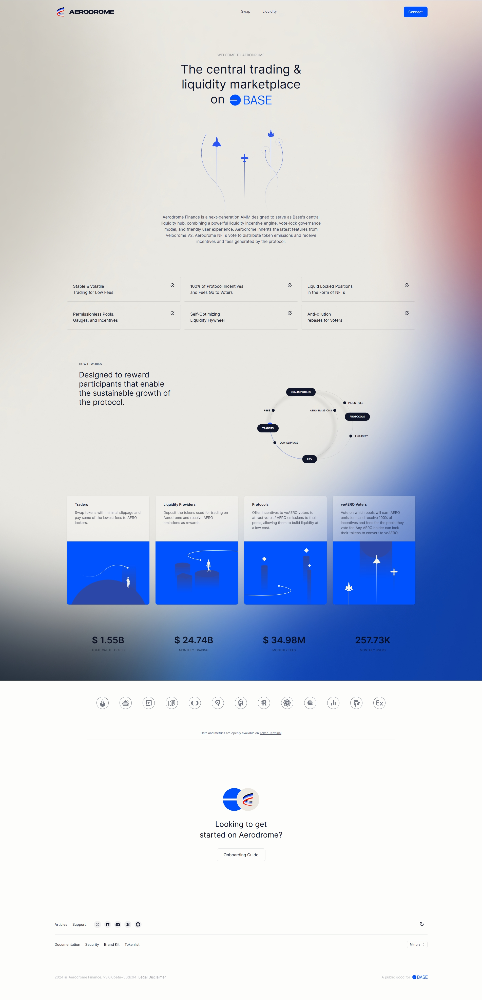
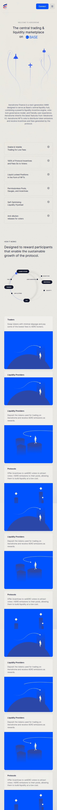

Aerodrome Finance: Revolutionizing Liquidity on Layer 2
Aerodrome Finance is an innovative decentralized finance platform tailored for Layer 2 networks, providing tools to optimize liquidity and token trading. By leveraging the scalability and efficiency of Layer 2, Aerodrome ensures fast transactions, lower fees, and a seamless DeFi experience for users. It empowers participants with advanced liquidity pool management, governance mechanisms, and yield-generating opportunities.
Core Features of Aerodrome Finance
Liquidity Provision: Stake tokens in pools to earn competitive rewards and drive ecosystem growth.
Efficient Trading: Experience faster transactions with reduced costs on Layer 2 networks.
Incentives and Governance: Engage with the platform by earning governance tokens and influencing its future direction.
Why Choose Aerodrome Finance?
Aerodrome Finance stands out as a user-friendly yet powerful DeFi platform. It focuses on enhancing liquidity efficiency, making DeFi accessible to a broader audience while maintaining transparency and security. Users can maximize their returns through incentives while contributing to the growing decentralized economy.
Join the future of decentralized finance with Aerodrome Finance and explore a new era of Layer 2 liquidity management.